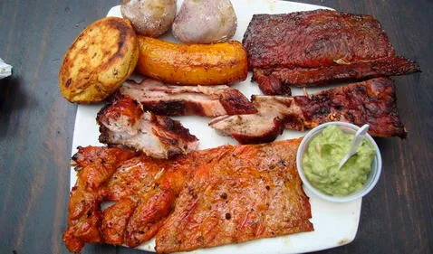

VICHADA
Región: Orinoquía y Amazonía
Punto de Interés
Puente Paso Ganado

Descripción
El espléndido puente Paso Ganado estaba ante nuestra vista, un puente en arco de 200 metros de longitud sobre el Río Bita.
Gastronomía

Chigüiro Asado: Es una comida nativa, a base de pescados de la Amazonía, preparado con ingredientes propios de la región, envuelto en hoja de bijao y asado en carbón.